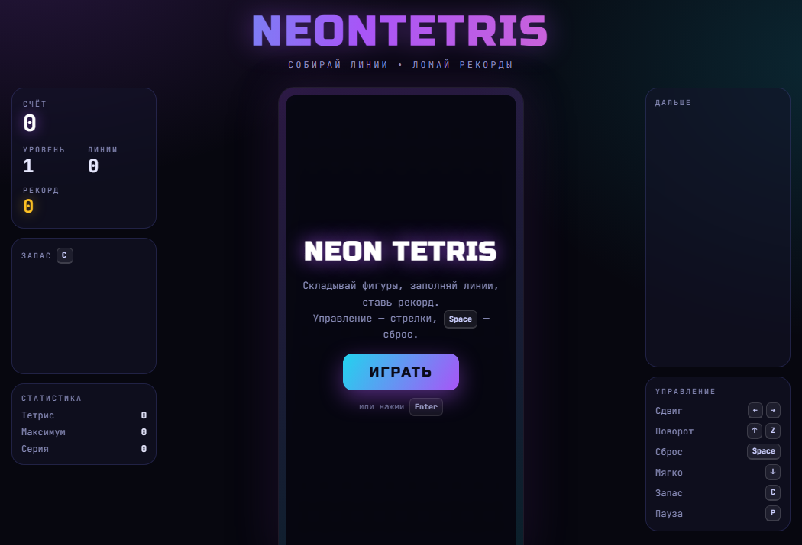
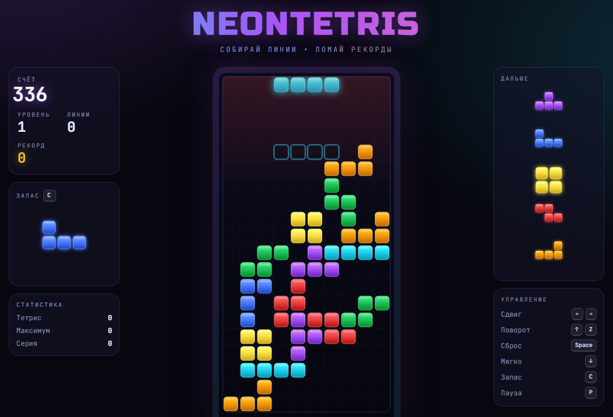

Браузерный тетрис на чистом JavaScript — без фреймворков, зависимостей и сборки.

Полноценная реализация классического тетриса по Tetris Guideline: SRS-повороты с кик-оффсетами, hold, ghost-фигура, lock delay, T-spin, back-to-back и комбо. Клавиатура и тач-управление, локальный рекорд, статический деплой.
Neon Tetris — играбельный браузерный тетрис, собранный по рекомендациям Tetris Guideline. Игровая логика отделена от DOM, рендер работает на Canvas 2D, а проект обходится без единой npm-зависимости — включая тесты и локальный dev-сервер.
node:http, тесты на node:test, статика на Vercel.
Полные таблицы кик-оффсетов для JLSTZ и I, отдельное поведение O. Повороты у стен и в тесных колодцах работают предсказуемо.
Каждая из семи фигур выпадает ровно один раз за «мешок». Очередь показывает пять следующих фигур — можно планировать заранее.
Отложенную фигуру можно вернуть, но не раньше фиксации текущей. Ghost-подсказка показывает точную позицию приземления.
500 мс на фиксацию фигуры и до 15 сбросов таймера при движении или повороте — привычное ощущение управления.
Линии 100 / 300 / 500 / 800 × уровень, T-spin и mini T-spin, back-to-back ×1.5, комбо +50 × серия × уровень.
Новый уровень каждые 10 линий. Скорость падения растёт по формуле, soft drop ускоряет в 20 раз.
| Действие | Клавиши |
|---|---|
| Сдвиг влево / вправо | ← → |
| Поворот по / против часовой | ↑ X / Z Ctrl |
| Мгновенный сброс | Space |
| Мягкий сброс | ↓ |
| Запас фигуры | C Shift |
| Пауза | P Esc |
На телефоне под полем появляются кнопки, а по самому полю работают свайпы:
localStorage и переживает перезапуск браузера.
Tetris управляет состоянием партии и генерирует события, а рендер, HUD и оверлеи подписываются на них. Логику можно тестировать в Node.js без браузера.
| Модуль | Ответственность |
|---|---|
| pieces.js | Фигуры, SRS-состояния, кик-оффсеты, генератор 7-bag. |
| engine.js | Состояние партии, движение, коллизии, очистка линий, очки, события. |
| renderer.js | Canvas 2D: поле, ghost, hold, очередь, анимации, пульсация опасной высоты. |
| input.js | Клавиатура с DAS/ARR, тач-кнопки и свайпы, пауза при потере фокуса. |
| storage.js | Рекорд в localStorage с безопасным фолбэком при исключениях. |
| main.js | Игровой цикл, HUD, оверлеи, тосты, сохранение рекорда. |
dt не больше 50 мс, циклы гравитации защищены guard-счётчиком от «спирали смерти».ResizeObserver без лишней нагрузки.try/catch.node:http и node:test — только стандартная библиотека.// main.js · один кадр function frame(now) { const dt = Math.min( 0.05, (now - lastTime) / 1000 ); input.update(dt); // DAS / ARR game.update(dt); // гравитация for (const e of game.drainEvents()) { handle(e); // HUD, тосты } renderer.draw(game, dt); requestAnimationFrame(frame); }
Порядок шагов фиксирован: ввод → логика → события → рендер.
11 юнит-тестов на встроенном node:test покрывают ключевые правила:
# dev-сервер на node:http npm run dev # http://localhost:3000 # юнит-тесты игрового ядра npm test
Зависимостей нет — npm install не требуется.
cleanUrls, trailingSlash: false, кэш для /assets/*.main.adil/ ├─ index.html ├─ server.mjs ├─ vercel.json ├─ src/ │ ├─ styles.css │ └─ js/ │ ├─ pieces.js engine.js │ ├─ renderer.js input.js │ └─ storage.js main.js └─ tests/ └─ engine.test.mjs
Проект показывает полный цикл разработки небольшой игры: от игровых правил и рендера до тестов, dev-инфраструктуры и статического деплоя.